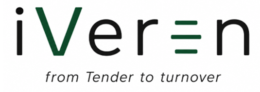

01
Concept
Understand requirements and identify opportunities.

Get in touch →INDUSTRIAL EXPERTISE. PRACTICAL SOLUTIONS.
We understand the requirements of global industry leaders and make them manageable for SME suppliers.
Understand requirements and identify opportunities.
Define scope, strategy and compliant processes.
Implement efficient and robust processes.
Enable successful handover and ramp-up.
Support continuous performance and service.
OUR APPROACH
We combine real industry experience with proven methods and standards to help SME suppliers navigate complex requirements in industries such as chemical engineering, plant construction and industrial manufacturing — without unnecessary complexity.
Why iVeron →Know the standards and expectations of global players.
From tender preparation to after-sales service.
Practical, efficient and right-sized for your business.
Hands-on support from experienced engineers.
WHY iVERON
Our goal is not to transfer corporate complexity into an SME. We bring exactly the methods, standards and structures that are actually needed — pragmatic, scalable and tailored to the organization.
FAST ENTRY
A focused technical or quality assessment during the tender phase — with an end-to-end perspective and without unnecessary consulting overhead.
2–4 hRemote assessment
FocusedDefined technical or quality topic
ActionableShort recommendation paper
ABOUT US
iVeron was founded by experienced industry professionals with backgrounds in global companies and complex industrial environments. We connect lifecycle, process and project expertise with hands-on experience in construction, quality and turnover.
LET'S TALK
From a single question to end-to-end support.
Hamburg · Heidelberg · Germany